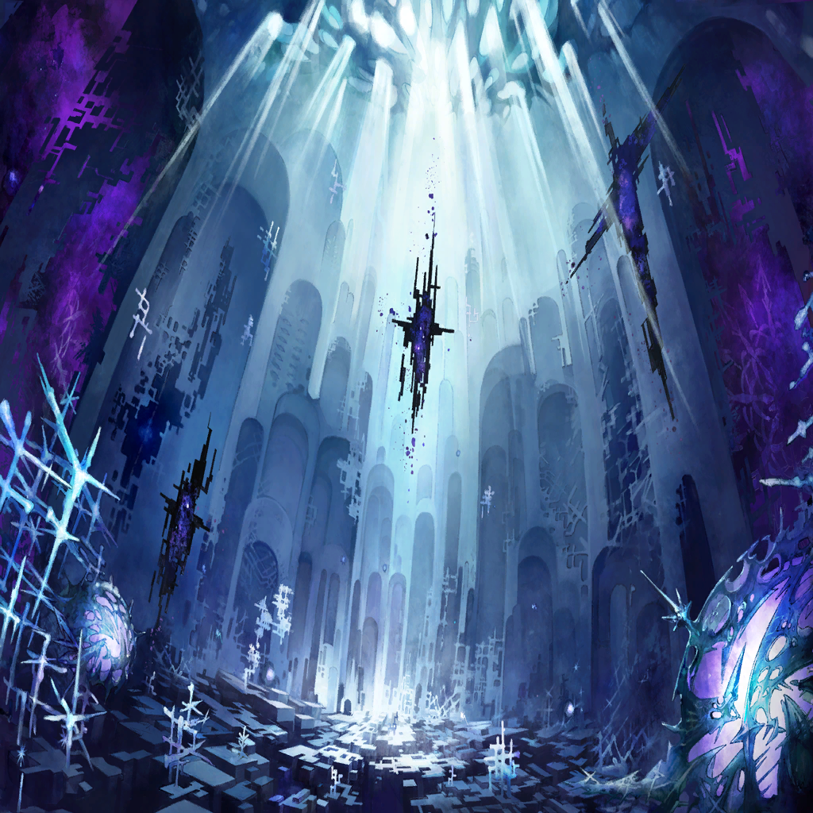

|
 |
| 憤怒の民Ａ |
よう、アンタ！
今日も町を守ってくれたんだって？
助かるよホントに！ |
| 憤怒の民Ｂ |
あらあら、魔物退治のイイ男じゃない
今、パンが焼き立てなんだけど持ってく？ |
| クェンス |
…打ち解けすぎだろ、俺ら… |

ザフィリス |
こうも感謝されると、こそばゆいな
私たちにとっては、
魔物退治など大した労働ではないのだが |
| クェンス |
ま、適材適所ではあるさ |
| クェンス |
しっかし、この町の連中…
本当に荒事はからっきしなんだな |
ザフィリス |
人間がマギルを利用する技術
魔法の発達も、他の層より遅れている…
と言うより、ほぼ進んでいないようだ |
| クェンス |
素養自体はありそうなんだがね
この層の連中 |
| クェンス |
これも、
リンドレイクの竜界の影響…なのかね？ |
ザフィリス |
さて、な |
ザフィリス |
ともかく、今日の仕事は終えた
ここからは情報収集と、
リンドレイクに会う方法を―― |
| 憤怒の民Ｃ |
なんだと…!?
もう一度言ってみろ!! |
| クェンス |
…喧嘩か？ |
| 憤怒の民Ｃ |
俺の作ったガレットが
不味いってのか!? |
| 憤怒の民Ｄ |
そうは言ってないが！
柑橘系はダメだって話しただろ!? |
| クェンス |
何事だ？ |
| 野次馬 |
ああ、アンタは―― |
| クェンス |
あー、喧嘩か？ |
| 野次馬 |
そうなんだよ。くだらない理由なんだが
あいつら、友人同士なんだがちょっとした
行き違いがあったらしくってさ |
| 野次馬 |
なんでも、誕生日の祝いの品がどうとか |
| クェンス |
マジでくだらない理由だな… |
| クェンス |
けど、にしては野次馬が多くないか |
| 野次馬 |
そりゃ――まあ |
| 憤怒の民Ｃ |
なんだよ、俺が悪いってのか!? |
| 憤怒の民Ｄ |
こっちのせいだってのかよ！ |
| 野次馬 |
あー、マズいマズいマズい
早く止めないと… |
| クェンス |
？ 何をそんなに慌てて |
| 野次馬 |
お前ら、それくらいにしとけ！
それ以上は“憤怒”になる！
禁を破ることになるぞ！ |
| 憤怒の民Ｃ・Ｄ |
……っ！ |
| 憤怒の民Ｃ |
そ、そうだな…悪い |
| 憤怒の民Ｄ |
いや、こっちこそ…
ちゃんと確認すべきだった… |
| 野次馬 |
ふぅ…心臓に悪いぜ |
| クェンス |
…禁？ |
| 野次馬 |
ああ、外からの客人じゃあ知らないか |
| 野次馬 |
この層ではさ、
他人を恨んだり憎むのを禁じてるんだ |
| クェンス |
そりゃ、結構な志だが…
心の中のことだろ
そう簡単に止められるもんか？ |
| 野次馬 |
それは、まあな… |
| クェンス |
俺ならいっそ、吐き出しちまったほうが
スッキリすると思うがね |
| 野次馬 |
…そりゃ、俺たち自身はそうさ
けど、それじゃあ罪が溜まっちまう |
| クェンス |
罪？ |
| 野次馬 |
ああ、竜との古い約束でな
相手はリンドレイク様より前の代って
話なんだが… |
| 野次馬 |
“決して、怒りに身を任せてはならない
怒りは罪を呼び、血を濁らせる” |
| 野次馬 |
竜にそう教えられて、
俺たちはずっと“怒り”ってもんを
抑えて生きてきたんだ |
| 野次馬 |
実際、町で大きな喧嘩が起こった年は
不作になったり災害が起こったり、
色々と不幸が続いてな |
| クェンス |
なるほどね |
| クェンス |
（はっきり言って迷信…
だが、罪。罪か――） |
|  |
クレーブル |
…クェンス、すまん
アンブロシアのことは、頼んだ… |
|
| クェンス |
この層の竜は、
あの“穢れ”のことを知っていた…？ |
| クェンス |
（なら、リンドレイクもきっと
あの穢れの知識を持っているはず――） |
| クェンス |
（そいつを手に入れることができれば、
師匠の状態を理解することも
もしかすると、治すことだって…） |
ザフィリス |
クェンス？ |
| クェンス |
いや、なんでもない
ちょっとやる気が出ただけだ |
ザフィリス |
あの喧嘩を見て、か？
不思議なものだな、人間というのは |
| クェンス |
…アンタ、時々妙にアホになるよな… |
ザフィリス |
…？ |